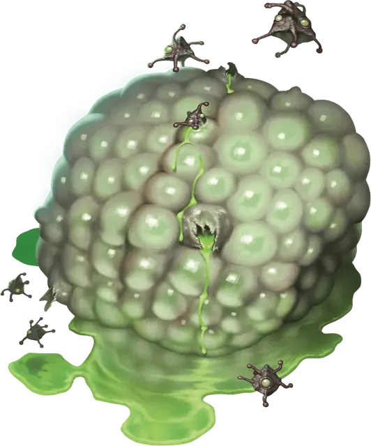

Скопление энцефалона
Encephalon Cluster
Большая Аберрация, без мировоззрения

Класс Доспеха 13 (природный доспех)
Хиты 110 (17к10 + 17)
Скорость 20 футов
| мод | спас | ||
|---|---|---|---|
| СИЛ | 23 | +6 | +6 |
| ЛОВ | 10 | +0 | +0 |
| ТЕЛ | 13 | +1 | +1 |
| мод | спас | ||
|---|---|---|---|
| ИНТ | 5 | −3 | −3 |
| МДР | 17 | +3 | +3 |
| ХАР | 7 | −2 | −2 |
Сопротивление урону психическая энергия
Иммунитет к состояниям ослепление
Чувства слепое зрение 60 футов (слеп за пределами этого радиуса), пассивное Восприятие 13
Опасность 10 (5900 опыта)
Бонус мастерства +4
Особенности
Легендарное сопротивление (3/день). Если скопление провалит спасбросок, оно может вместо этого преуспеть в нём.
Сопротивление магии. Скопление совершает с преимуществом спасброски от заклинаний и других магических эффектов.
Действия
Мультиатака. Скопление совершает две атаки Размашистым ударом. Он может заменить одну из этих атак на Создание потомства, если оно доступно.
Размашистый удар. Рукопашная атака оружием: +10 к попаданию, досягаемость 5 футов, одна цель. Попадание: дробящий урон 17 (2к10 + 6) плюс 10 (3к6) психического урона и если цель является существом, цель должна преуспеть в спасброске Силы Сл 18, иначе она будет сбито с ног. Если эта атака снижает хиты цели до 0, цель мгновенно умирает и поглощается скоплением.
Создать потомство (перезаряжается после короткого или продолжительного отдыха). Скопление выпучивается и извергает 1к4 зрелых яиц. Каждое яйцо приземляется в свободное место по выбору кластера в пределах 30 футов от себя и немедленно превращается в геммул энцефалона [encephalon Gemmule]. Геммулы подчиняются командам скопления и начинают свой ход сразу после него.
Реакции
Агрессивный голод. Сразу после того как по нему попали атакой, скопление перемещается на расстояние вплоть до своей скорости к атакующему. Это движение не провоцирует атаки. Если скопление заканчивает это движение в пределах 5 футов от атакующего, оно совершает одну атаку размашистым ударом по нему.
Описание
Когда колония иллитидов откладывает яйца в опасной близости от разлома Дальнего предела, яйцевой мешок имеет шанс мутировать в так называемое скопление энцефалона [encephalon cluster] — прожорливую, склизкую, псионическую массу в форме мозга, порождающую ужасы, называемые геммулами энцефалона [encephalon Gemmule].
Скопление энцефалонов не обращает внимания на старший мозг или его предшественников-свежевателей разума. Это гротескное существо бродит по тёмным и забытым пещерам, извергая искажённое потомство, чтобы оно могло размножаться. Таким образом, многие свежеватели разума рассматривают скопления энцефалона как коварные вирусы. Если его не остановить, одно-единственное скопление энцефалона может быстро стать огромной угрозой, способной захватить целую колонию свежевателей разума.